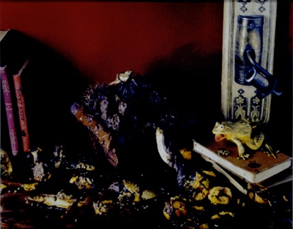

Felix Geller, Robert Hirschfeld and Gilad Bracha, Pattern Matching for an Object-Oriented Dynamically Typed Programming Language . Hasso Plattner Institute Technical Report 36, University of Potsdam, June 2010. Describes an experimental extension of Newspeak that supports pattern matching with first class patterns and data abstraction.
Gilad Bracha, Peter Ahe, Vassili Bykov, Yaron Kashai, William Maddox and Eliot Miranda. Modules as Objects in Newspeak. Proceedings of the 24th European Conference on Object Oriented Programming, Maribor, Slovenia, June 21-25 2010. Springer Verlag LNCS 2010. Won best paper award at the conference. The original publication is available at www.springerlink.com .
A paper describing the key ideas of Newspeak modularity.
Gilad Bracha, Peter Ahe, Vassil Bykov, Yaron Kashai and Eliot Miranda. The Newspeak Programming Platform .
A quick overview of the Newspeak platform as of May 2008.
Gilad Bracha.
Executable Grammars in Newspeak
.
Electronic Notes on Theoretical Computer Science,
Volume 193C, November 2007 pp. 3-18.
This paper is part of the
Festschrift
in honor of my PhD thesis advisor,
Gary Lindstrom
upon his retirement.
Describes a parser combinator library implemented in
Newspeak. The library is unique in how it allows the
separate definition and modular composition of grammar
and semantic actions. The paper also highlights some
features of Newspeak that help it host domain specific
languages.
Gilad Bracha.
On the Interaction of Method Lookup and Scope with
Inheritance and Nesting
.
3rd
ECOOP Workshop on Dynamic Languages and Applications
(2007).
A position paper focused on a narrow but crucial issue:
the meaning of names in a dynamic language with nested
classes (or objects) and inheritance. Gives some
examples of Newspeak.
Gilad Bracha.
Objects as Software Services
.
An evolving whitepaper accompanying my invited talk at
the Dynamic Language Symposium at OOPSLA05.
Gilad Bracha.
Pluggable Type Systems
. OOPSLA04 Workshop on Revival of Dynamic Languages.
A workshop paper giving the basic idea for pluggable and optional type systems. Should evolve into a real paper someday. There ‘s a lot more motivation and discussion to be added.
Gilad Bracha and
David Ungar
.
Mirrors: Design Principles for Meta-level Facilities of
Object-Oriented Programming Languages
.
In Proc. of the ACM Conf. on Object-Oriented
Programming, Systems, Languages and Applications,
October 2004.
A discussion of mirror based reflective APIs. Won the
Most Influential Paper
award at OOPSLA in 2014.
Mads Torgersen , Christian Plesner Hansen , Erik Ernst , Peter von der Ahé , Gilad Bracha and Neal Gafter . Adding Wildcards to the Java Programming Language . In Journal of Object Technology, vol. 3, no. 11, December 2004, Special issue: OOPS track at SAC 2004, Nicosia/Cyprus, pp. 97–116.
A description of the wildcard extensions to genericity.
Lars Bak, Gilad Bracha, Steffen Grarup, Robert Griesemer, David Griswold and Urs Hoelzle. Mixins in Strongtalk . ECOOP02 Workshop on Inheritance.
An invited paper for the workshop. It discusses the design of the mixin system in Animorphic Smalltalk (aka Strongtalk) .
Gilad Bracha, Martin Odersky , David Stoutamire , and Philip Wadler . Making the future safe for the past: Adding Genericity to the Java Programming Language . In Proc. of the ACM Conf. on Object-Oriented Programming, Systems, Languages and Applications, October 1998.
The GJ paper, that described the approach eventually taken to incorporate genericity into the Java TM programming language. While some details have changed (and some statements in the paper were actually wrong), this is still mostly accurate.
Sheng Liang and Gilad Bracha Dynamic Class Loading in the Java Virtual Machine in Proc. of the ACM Conf. on Object-Oriented Programming, Systems, Languages and Applications, October 1998.
The only real discussion of class loaders available, I guess.
Gilad Bracha.
The Strongtalk Type System for Smalltalk
. OOPSLA96 Workshop on Extending the Smalltalk
Language.
A short position paper that discusses the Strongtalk type system. It's more up to date than the OOPSLA paper, and quite close to the version that exists in the release.
Gilad Bracha and David Griswold. Extending Smalltalk with Mixins . OOPSLA96 Workshop on Extending the Smalltalk Language.
A short position paper that discusses mixins in Strongtalk. Deliberately avoids discussion of the implementation - at the time, Animorphic was still in stealth mode. Largely superseded by the ECOOP workshop paper.
Gilad Bracha and David Griswold. Strongtalk: Typechecking Smalltalk in a Production Environment . In Proc. of the ACM Conf. on Object-Oriented Programming, Systems, Languages and Applications, September 1993.
Describes the first version of the Strongtalk type system. A lot of important stuff changed later.
Gilad Bracha and Gary Lindstrom . Modularity Meets Inheritance . In Proceedings of the IEEE International Conference on Computer Languages, April 1992.
Summarizes some of the results from my dissertation. A shorter read than the whole thesis, but not as clear.
Gilad Bracha. The Programming Language Jigsaw: Mixins, Modularity and Multiple Inheritance . PhD thesis, University of Utah, 1992.
.
Gilad Bracha and William Cook . Mixin-based inheritance . In Proc. of the Joint ACM Conf. on Object-Oriented Programming, Systems, Languages and Applications and the European Conference on Object-Oriented Programming, October 1990.
Our original mixin paper, which identified mixins as a linguistic construct as opposed to a Lisp idiom.
Oracle and Java are registered trademarks of Oracle
and/or its affiliates. Other names may be trademarks of
their respective owners
.
Last updated July 4, 2026
Copyright Gilad Bracha 2006–2027